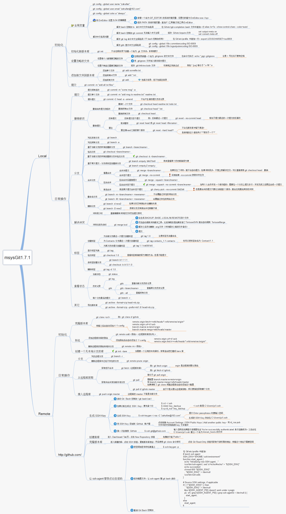

参考: Pro Git Git教程 -- 廖雪峰的官方网站 Linux下使用git命令及github项目 linux下git与github简单使用
[root@localhost /]# mkdir -p /tmp/test_git
[root@localhost /]# cd /tmp/test_git
[root@localhost test_git]# git init
Initialized empty Git repository in /tmp/test_git/.git/
[root@localhost test_git]# tree -a -F
.
`-- .git/
|-- HEAD
|-- objects/
| |-- info/
| `-- pack/
`-- refs/
|-- heads/
`-- tags/
[root@localhost test_git]# cat .git/HEAD
ref: refs/heads/master
[root@localhost test_git]# git ls-files --stage
在目录/tmp/test_git下新建git仓库, git ls-files --stage可读取index缓存区内容, --stage可显示stage
四个重要的文件或目录: HEAD, index, objects/, refs/
[root@localhost test_git]# echo 'test1' > 'test1.txt'
[root@localhost test_git]# git add test1.txt
[root@localhost test_git]# tree -a -F
.
|-- .git/
| |-- HEAD
| |-- index
| |-- objects/
| | |-- a5/
| | | `-- bce3fd2565d8f458555a0c6f42d0504a848bd5
| | |-- info/
| | `-- pack/
| `-- refs/
| |-- heads/
| `-- tags/
`-- test1.txt
[root@localhost test_git]# cat .git/HEAD
ref: refs/heads/master
[root@localhost test_git]# git ls-files --stage
100644 a5bce3fd2565d8f458555a0c6f42d0504a848bd5 0 test1.txt
[root@localhost test_git]# git cat-file -t a5bce3
blob
[root@localhost test_git]# git cat-file -p a5bce3
test1
新建test1.txt, 执行git add test1.txt添加文件到缓存区.
HEAD无变化, index加入了test1.txt文件, objects加入了一个对象.
git ls-files的输出格式: [<tag> ]<mode> <object> <stage> <file>
git cat-file -t查看对象的类型, git cat-file -p输出对象内容, objects中加入了一个数据对象a5bce3, 内容是test1.txt的内容.
[root@localhost test_git]# git commit -m 'add test1'
[master (root-commit) f5b6cb2] add test1
1 file changed, 1 insertion(+)
create mode 100644 test1.txt
[root@localhost test_git]# tree -a -F
.
|-- .git/
| |-- HEAD
| |-- index
| |-- objects/
| | |-- a5/
| | | `-- bce3fd2565d8f458555a0c6f42d0504a848bd5
| | |-- c0/
| | | `-- da834e42dcbf7b2b1c4a97925bef105d3863a3
| | |-- f5/
| | | `-- b6cb21c2faf4c97430c8d14ad73e8783cebbc5
| | |-- info/
| | `-- pack/
| `-- refs/
| |-- heads/
| | `-- master
| `-- tags/
`-- test1.txt
执行git commit提交更改, objects下新增两个对象c0da83, f5b6cb. refs/heads下新增master文件.
[root@localhost test_git]# cat .git/HEAD
ref: refs/heads/master
[root@localhost test_git]# git ls-files --stage
100644 a5bce3fd2565d8f458555a0c6f42d0504a848bd5 0 test1.txt
[root@localhost test_git]# git cat-file -t a5bce3
blob
[root@localhost test_git]# git cat-file -p a5bce3
test1
[root@localhost test_git]# git cat-file -t c0da83
tree
[root@localhost test_git]# git cat-file -p c0da83
100644 blob a5bce3fd2565d8f458555a0c6f42d0504a848bd5 test1.txt
[root@localhost test_git]# git cat-file -t f5b6cb
commit
[root@localhost test_git]# git cat-file -p f5b6cb
tree c0da834e42dcbf7b2b1c4a97925bef105d3863a3
author lwjandmy <lwjandmy@qq.com> 1464037174 +0000
committer lwjandmy <lwjandmy@qq.com> 1464037174 +0000
add test1
[root@localhost test_git]# cat .git/refs/heads/master
f5b6cb21c2faf4c97430c8d14ad73e8783cebbc5
HEAD无变化, index无变化.
objects中新增两个对象, 一个是树对象, 保存了test1.txt的文件标志, 文件名信息; 一个是提交对象, 保存了顶层树对象指针, 提交注释信息.
refs/heads/master保存了提交对象的指针.
[root@localhost test_git]# git branch dev
[root@localhost test_git]# git checkout dev
Switched to branch 'dev'
[root@localhost test_git]# tree -a -F
.
|-- .git/
| |-- HEAD
| |-- index
| |-- objects/
| | |-- a5/
| | | `-- bce3fd2565d8f458555a0c6f42d0504a848bd5
| | |-- c0/
| | | `-- da834e42dcbf7b2b1c4a97925bef105d3863a3
| | |-- f5/
| | | `-- b6cb21c2faf4c97430c8d14ad73e8783cebbc5
| | |-- info/
| | `-- pack/
| `-- refs/
| |-- heads/
| | |-- dev
| | `-- master
| `-- tags/
`-- test1.txt
[root@localhost test_git]# cat .git/HEAD
ref: refs/heads/dev
[root@localhost test_git]# git ls-files --stage
100644 a5bce3fd2565d8f458555a0c6f42d0504a848bd5 0 test1.txt
[root@localhost test_git]# cat .git/refs/heads/dev
f5b6cb21c2faf4c97430c8d14ad73e8783cebbc5
git branch dev新建dev分支, git checkout dev切换到dev分支.
HEAD指向了refs/heads/dev, index没变化, objects没变化, refs/heads/dev新增, 指向提交对象.
head引用保存了所有分支信息, 如master分支, dev分支. 通过指向提交对象, 记录分支内容.
[root@localhost test_git]# git tag -a 'tag1' -m 'add tag1'
[root@localhost test_git]# tree -a -F
.
|-- .git/
| |-- HEAD
| |-- index
| |-- objects/
| | |-- 52/
| | | `-- 195b1ee8d75edc34ef8f8812d21227c4ae3a6d
| | |-- a5/
| | | `-- bce3fd2565d8f458555a0c6f42d0504a848bd5
| | |-- c0/
| | | `-- da834e42dcbf7b2b1c4a97925bef105d3863a3
| | |-- f5/
| | | `-- b6cb21c2faf4c97430c8d14ad73e8783cebbc5
| | |-- info/
| | `-- pack/
| `-- refs/
| |-- heads/
| | |-- dev
| | `-- master
| `-- tags/
| `-- tag1
`-- test1.txt
git add -a 'tag1' -m 'add tag1'添加一个标签引用, 标签名'tag1', 标签注释'add tag1'.
objects下增加了新对象, refs/tags下增加了tag1文件.
[root@localhost test_git]# cat .git/HEAD
ref: refs/heads/dev
[root@localhost test_git]# git ls-files --stage
100644 a5bce3fd2565d8f458555a0c6f42d0504a848bd5 0 test1.txt
[root@localhost test_git]# git cat-file -t 52195b
tag
[root@localhost test_git]# git cat-file -p 52195b
object f5b6cb21c2faf4c97430c8d14ad73e8783cebbc5
type commit
tag tag1
tagger lwjandmy <lwjandmy@qq.com> 1464041578 +0000
add tag1
[root@localhost test_git]# cat .git/refs/tags/tag1
52195b1ee8d75edc34ef8f8812d21227c4ae3a6d
HEAD没变化, index没变化.
objects增加了一个标记对象, 内容是一个提交对象指针+tag名+tag注释.
refs/tags增加了tag1文件, 内容是标记对象指针.
[root@localhost test_git]# git remote add origin https://github.com/lwjandmy/test_git.git
[root@localhost test_git]# git push origin dev
Counting objects: 3, done.
Writing objects: 100% (3/3), 211 bytes | 0 bytes/s, done.
Total 3 (delta 0), reused 0 (delta 0)
To https://github.com/lwjandmy/test_git.git
* [new branch] dev -> dev
[root@localhost test_git]# tree -a -F
.
|-- .git/
| |-- HEAD
| |-- index
| |-- objects/
| | |-- 52/
| | | `-- 195b1ee8d75edc34ef8f8812d21227c4ae3a6d
| | |-- a5/
| | | `-- bce3fd2565d8f458555a0c6f42d0504a848bd5
| | |-- c0/
| | | `-- da834e42dcbf7b2b1c4a97925bef105d3863a3
| | |-- f5/
| | | `-- b6cb21c2faf4c97430c8d14ad73e8783cebbc5
| | |-- info/
| | `-- pack/
| `-- refs/
| |-- heads/
| | |-- dev
| | `-- master
| |-- remotes/
| | `-- origin/
| | `-- dev
| `-- tags/
| `-- tag1
`-- test1.txt
git remote add origin https://github.com/lwjandmy/test_git.git添加一个远端git.
git push origin dev推送dev分支到远端.
refs下新增remotes/origin/dev.
[root@localhost test_git]# cat .git/HEAD
ref: refs/heads/dev
[root@localhost test_git]# git ls-files --stage
100644 a5bce3fd2565d8f458555a0c6f42d0504a848bd5 0 test1.txt
[root@localhost test_git]# cat .git/refs/remotes/origin/dev
f5b6cb21c2faf4c97430c8d14ad73e8783cebbc5
HEAD没变化, index没变化, objects没变化.
refs下新增remotes/origin/dev, 记录了提交对象的指针.
建立git仓库
[root@localhost /]# mkdir -p /tmp/test_git
[root@localhost /]# cd /tmp/test_git/
[root@localhost test_git]# git init
Initialized empty Git repository in /tmp/test_git/.git/
提交test1.txt
[root@localhost test_git]# echo 'test1' > test1.txt
[root@localhost test_git]# git add test1.txt
[root@localhost test_git]# git commit -m 'add test1.txt'
[master (root-commit) e8fb659] add test1.txt
1 file changed, 1 insertion(+)
create mode 100644 test1.txt
修改test1.txt.
[root@localhost test_git]# echo 'data changed' > test1.txt
git reset --hard HEAD恢复工作区的内容, 其实是恢复HEAD指针到HEAD提交对象的附加效果.
[root@localhost test_git]# git status
On branch master
Changes not staged for commit:
(use "git add <file>..." to update what will be committed)
(use "git checkout -- <file>..." to discard changes in working directory)
modified: test1.txt
no changes added to commit (use "git add" and/or "git commit -a")
[root@localhost test_git]# git reset --hard HEAD
HEAD is now at e8fb659 add test1.txt
[root@localhost test_git]# git status
On branch master
nothing to commit, working directory clean
修改test1.txt, 加入缓存区.
[root@localhost test_git]# echo 'data changed' > test1.txt
[root@localhost test_git]# git add test1.txt
git reset --mixed HEAD恢复缓冲区内容. 其实是恢复HEAD指针到HEAD提交对象的附加效果.
[root@localhost test_git]# git status
On branch master
Changes to be committed:
(use "git reset HEAD <file>..." to unstage)
modified: test1.txt
[root@localhost test_git]# git reset --mixed HEAD
Unstaged changes after reset:
M test1.txt
[root@localhost test_git]# git status
On branch master
Changes not staged for commit:
(use "git add <file>..." to update what will be committed)
(use "git checkout -- <file>..." to discard changes in working directory)
modified: test1.txt
no changes added to commit (use "git add" and/or "git commit -a")
修改test1.txt, 加入缓存区, 并提交.
[root@localhost test_git]# echo 'data changed' > test1.txt
[root@localhost test_git]# git add test1.txt
[root@localhost test_git]# git commit -m 'change test1.txt'
[master fafcf6f] change test1.txt
1 file changed, 1 insertion(+), 1 deletion(-)
git reset --soft HEAD^修改HEAD指针到HEAD^, 也就是上一个提交对象.
[root@localhost test_git]# git log --graph --pretty=oneline --abbrev-commit
* f5a2022 change test1.txt
* e8fb659 add test1.txt
[root@localhost test_git]# git reset --soft HEAD^
[root@localhost test_git]# git log --graph --pretty=oneline --abbrev-commit
* e8fb659 add test1.txt
[root@localhost test_git]# git status
On branch master
Changes to be committed:
(use "git reset HEAD <file>..." to unstage)
modified: test1.txt
git reset [--soft | --mixed(default) | --hard | --merge | --keep] [<commit> default: HEAD]
初始化git
[root@localhost /]# mkdir -p /tmp/test_git
[root@localhost /]# cd /tmp/test_git/
[root@localhost test_git]# git init
Initialized empty Git repository in /tmp/test_git/.git/
在master分支提交修改
[root@localhost test_git]# echo 'branch master' > test1.txt
[root@localhost test_git]# git add test1.txt
[root@localhost test_git]# git commit -m 'add test1.txt'
[master (root-commit) 2c3aaad] add test1.txt
1 file changed, 1 insertion(+)
create mode 100644 test1.txt
创建b1和b2分支, 并在两个分支中各进行一次提交.
[root@localhost test_git]# git branch b1
[root@localhost test_git]# git branch b2
[root@localhost test_git]# git checkout b1
Switched to branch 'b1'
[root@localhost test_git]# echo 'branch b1' > test1.txt
[root@localhost test_git]# git add test1.txt
[root@localhost test_git]# git commit -m 'change test1.txt in branch b1'
[b1 c1d913c] change test1.txt in branch b1
1 file changed, 1 insertion(+), 1 deletion(-)
[root@localhost test_git]# git checkout b2
Switched to branch 'b2'
[root@localhost test_git]# echo 'branch b2' > test1.txt
[root@localhost test_git]# git add test1.txt
[root@localhost test_git]# git commit -m 'change test1.txt in branch b2'
[b2 228a263] change test1.txt in branch b2
1 file changed, 1 insertion(+), 1 deletion(-)
[root@localhost test_git]# git log --graph --pretty=oneline --abbrev-commit --a
ll
* 228a263 change test1.txt in branch b2
| * c1d913c change test1.txt in branch b1
|/
* 2c3aaad add test1.txt
回到master分支, 使用git merge <branch>合并分支.
[root@localhost test_git]# git checkout master
Switched to branch 'master'
[root@localhost test_git]# git merge b1
Updating 2c3aaad..c1d913c
Fast-forward
test1.txt | 2 +-
1 file changed, 1 insertion(+), 1 deletion(-)
[root@localhost test_git]# git merge b2
Auto-merging test1.txt
CONFLICT (content): Merge conflict in test1.txt
Automatic merge failed; fix conflicts and then commit the result.
[root@localhost test_git]# cat test1.txt
<<<<<<< HEAD
branch b1
=======
branch b2
>>>>>>> b2
由于两个分支(master, b2)来源于同一父分支(master^), 其中test1.txt文件内容互不相同, 导致merge失败. 需要人工手动编辑test1.txt, 之后执行一次commit, 达到merge b2的效果.
[root@localhost test_git]# echo 'branch b2' > test1.txt
[root@localhost test_git]# git add test1.txt
[root@localhost test_git]# git commit -m 'merged branch b2'
[master 4d01a7e] merged branch b2
[root@localhost test_git]# git log --all --graph --pretty=oneline --abbrev-comm
it
* 4d01a7e merged branch b2
|\
| * 228a263 change test1.txt in branch b2
* | c1d913c change test1.txt in branch b1
|/
* 2c3aaad add test1.txt
user1初始化仓库
[root@localhost /]# mkdir -p /tmp/user1/test_git
[root@localhost /]# cd /tmp/user1/test_git/
[root@localhost test_git]# git init
Initialized empty Git repository in /tmp/user1/test_git/.git/
在master分支上执行一次提交, 模拟项目进行到一个阶段.
[root@localhost test_git]# echo 'code on master branch' > code.c
[root@localhost test_git]# git add code.c
[root@localhost test_git]# git commit -m 'version 1.0 release'
[master (root-commit) ba67e9b] version 1.0 release
1 file changed, 1 insertion(+)
create mode 100644 code.c
[root@localhost test_git]# git remote add origin https://github.com/lwjandmy/test_git.git
[root@localhost test_git]# git push origin master
Counting objects: 3, done.
Writing objects: 100% (3/3), 232 bytes | 0 bytes/s, done.
Total 3 (delta 0), reused 0 (delta 0)
To https://github.com/lwjandmy/test_git.git
* [new branch] master -> master
user2在b1分支上提交代码
[root@localhost /]# mkdir -p /tmp/user2
[root@localhost /]# cd /tmp/user2
[root@localhost user2]# git clone https://github.com/lwjandmy/test_git.git
Cloning into 'test_git'...
remote: Counting objects: 3, done.
remote: Total 3 (delta 0), reused 3 (delta 0), pack-reused 0
Unpacking objects: 100% (3/3), done.
Checking connectivity... done.
[root@localhost user2]# cd test_git/
[root@localhost test_git]# git checkout -b b1
Switched to a new branch 'b1'
[root@localhost test_git]# echo 'fix bug1' >> code.c
[root@localhost test_git]# git add code.c
[root@localhost test_git]# git commit -m 'fix bug1'
[b1 95263be] fix bug1
1 file changed, 1 insertion(+)
[root@localhost test_git]# git push origin b1
Username for 'https://github.com': lwjandmy
Password for 'https://lwjandmy@github.com':
Counting objects: 3, done.
Writing objects: 100% (3/3), 263 bytes | 0 bytes/s, done.
Total 3 (delta 0), reused 0 (delta 0)
To https://github.com/lwjandmy/test_git.git
* [new branch] b1 -> b1
user3在b2分支上提交代码
[root@localhost /]# mkdir -p /tmp/user3
[root@localhost /]# cd /tmp/user3
[root@localhost user3]# git clone https://github.com/lwjandmy/test_git.git
Cloning into 'test_git'...
remote: Counting objects: 6, done.
remote: Compressing objects: 100% (2/2), done.
remote: Total 6 (delta 0), reused 6 (delta 0), pack-reused 0
Unpacking objects: 100% (6/6), done.
Checking connectivity... done.
[root@localhost user3]# cd test_git/
[root@localhost test_git]# git checkout -b b2
Switched to a new branch 'b2'
[root@localhost test_git]# echo 'fix bug2' >> code.c
[root@localhost test_git]# git add code.c
[root@localhost test_git]# git commit -m 'fix bug2'
[b2 5236fcf] fix bug2
1 file changed, 1 insertion(+)
[root@localhost test_git]# git push origin b2
Username for 'https://github.com': lwjandmy
Password for 'https://lwjandmy@github.com':
Counting objects: 3, done.
Writing objects: 100% (3/3), 263 bytes | 0 bytes/s, done.
Total 3 (delta 0), reused 0 (delta 0)
To https://github.com/lwjandmy/test_git.git
* [new branch] b2 -> b2
user1获取user2和user3提交的代码
[root@localhost test_git]# cd /tmp/user1/test_git/
[root@localhost test_git]# git fetch origin
remote: Counting objects: 6, done.
remote: Compressing objects: 100% (2/2), done.
remote: Total 6 (delta 1), reused 5 (delta 0), pack-reused 0
Unpacking objects: 100% (6/6), done.
From https://github.com/lwjandmy/test_git
* [new branch] b1 -> origin/b1
* [new branch] b2 -> origin/b2
user1执行合并
[root@localhost test_git]# git merge origin/b1
Updating ba67e9b..95263be
Fast-forward
code.c | 1 +
1 file changed, 1 insertion(+)
[root@localhost test_git]# git merge origin/b2
Auto-merging code.c
CONFLICT (content): Merge conflict in code.c
Automatic merge failed; fix conflicts and then commit the result.
出现冲突, 手动编辑冲突代码, 并执行提交
[root@localhost test_git]# vim code.c
[root@localhost test_git]# git add code.c
[root@localhost test_git]# git commit -m 'merge b2'
[master 30c9864] merge b2
[root@localhost test_git]# git push origin master
Counting objects: 3, done.
Writing objects: 100% (3/3), 291 bytes | 0 bytes/s, done.
Total 3 (delta 0), reused 0 (delta 0)
To https://github.com/lwjandmy/test_git.git
ba67e9b..30c9864 master -> master
创建文件.gitignore
例子:
node_modules/
*.log
先pull一下, 再push
git pull origin_github gh-pages origin_github/gh-pages
